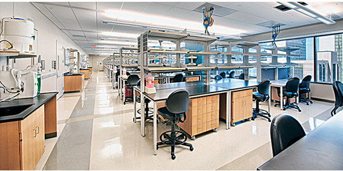

Welcome to Ruli Gao Research Laboratory at the Center for Bioinformatics & Computational Biology

Houston Methodist Research Institute
The Gao Laboratory is dedicated to translating complex human genome data into new insights in cancer, neurodegenerative and cardiovascular diseases. At Houston Methodist Hospital, we are experts in computational biology and statistics, with a focus on designing and applying single cell sequencing approaches to track genome evolution and dissect ecological cell system in human diseases.
Gordon single cell genomics conferenced cancelled due to COVID19 pandemic.
Find more details here. This first Annual GCC SCOC Symposium is designed to bring together local community that share the common interests in single cell technologies.
Dr. Ruli Gao received Single Core User Group Grant to investigate intra-tumor evolution in aggresive thyroid cancer patients.
Dr. Ruli Gao received Susan G. Komen basic/translational research to track chemoresistance in triple negative breast cancer patients by single cell sequencing approaches.
A variety of COVID19 reserach activities are ongoing here at Houston Methodist including several clinical trials and many pre-clinical reserach projects.
Due to COVID19, AACR annual meeting moved to be virtual and available free to everyone.